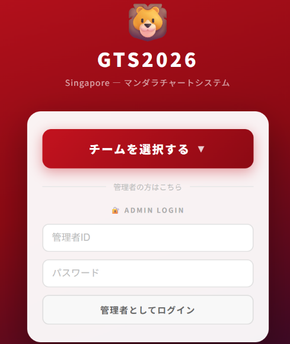
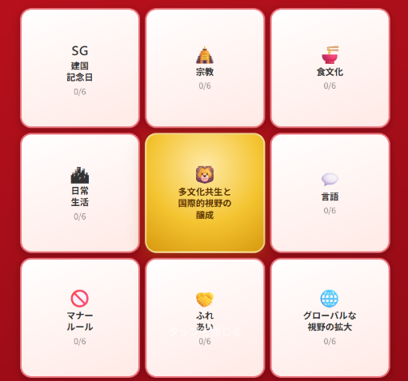
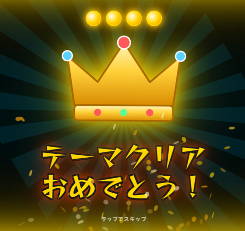
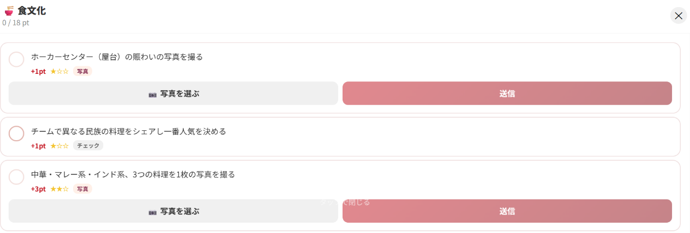

マンダラチャートWebシステム
公益社団法人日本青年会議所 近畿地区京都ブロック協議会 国際連携委員会 2026年度 国際交流事業(シンガポール)
本ページは、2026年8月9日にシンガポールで実施した国際交流事業で使用したマンダラチャートWebシステムについて、次年度以降に同様の仕組みを再現するための資料として公開しているものです。
本事業の参加者の情報、回答及び写真は含まれていません。
1. システムの概要
| 目的 | マンダラチャートの各ミッションについて、各チームが現地から記述、写真及び達成状況を登録し、運営側が進捗と得点を随時把握できるようにする。 |
|---|---|
| 構成 | 中心テーマである多文化共生と国際的視野の醸成の周囲に8つのテーマ(建国記念日、宗教、食文化、日常生活、言語、マナールール、ふれあい及びグローバルな視野の拡大)を置き、各テーマにミッションを設定。 |
| 当日の利用 | 全22チームがスマートフォンから利用し、記述による回答331件及び写真152枚が記録された。 |
| 利用方法 | チームはチーム番号を選ぶだけでログインし、記述の入力、写真の撮影及び達成のチェックを行う。得点とランクは登録と同時に集計される。 |
2. 画面




3. 同様の仕組みを使う場合
- 導入手順書(PDF): 準備するもの、設定の変更、公開及び当日の案内までの手順をまとめたものです。
- プログラム一式: 団体名、チーム数及びミッションは、設定ファイルの書き換えのみで変更できます。